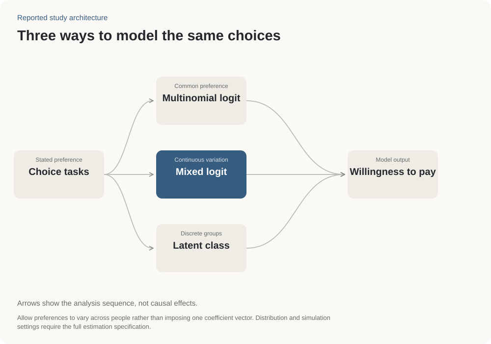

Option A
- Price
- VND 600 million
- Driving range
- 350 km / charge
- Charging time
- 45 min, 20–80%
Consumer research · Vietnam
Analyzed how young consumers balanced price, driving range and charging time when choosing an electric car.
Survey designCustomer choice analysisComparing buyer groups
Two buyer groups and estimates of how much extra they would pay for different features.
CIEMB 2025 manuscript

Research question
Participants repeatedly chose between cars with different prices and features, revealing their priorities and differences in preferences.
Illustrative choice task
More range, a shorter charge, or a lower price. Every option comes with a trade-off.
Compare price, range and charging.
B costs VND 120 million more, adds 150 km of range and charges 15 minutes faster.
One person may choose a lower price; another may pay more for a longer drive between charges. The real study compared many choices to look for these patterns. One choice here cannot identify your buyer group.
Illustrative profiles, not the original survey tasks or model predictions. Network size and body design are held constant here. Charging times use the same illustrative 20–80% basis.
Key finding
Two buyer groups represented 65% and 35% of the sample. Extra driving range had the highest estimated value in both; body-design estimates were less certain.
Practical use
Choose which features to emphasize for each buyer group. The results do not predict sales at a given price.
Read with carePeople chose hypothetical cars. The amounts are model estimates, not money spent on actual purchases.
Estimated extra amounts for each feature, in VND million. Dots show the estimates; lines show their 95% uncertainty ranges. A line crossing zero means the estimate is uncertain.
Utility-focused133.9m
95% interval 65.3 to 202.5m VNDDesign-sensitive180m
95% interval 100.2 to 259.8m VNDUtility-focused96m
95% interval -6.7 to 198.7m VNDDesign-sensitive105.3m
95% interval 19.4 to 191.2m VNDUtility-focused43.7m
95% interval -26.4 to 113.8m VNDDesign-sensitive60.5m
95% interval 21.8 to 99.2m VNDUtility-focused43.3m
95% interval -21.8 to 108.4m VNDDesign-sensitive67.9m
95% interval -24.8 to 160.7m VNDBoth range intervals lie above zero. The larger point estimate in the design-sensitive group is not, by itself, a tested difference between groups.
| Attribute | Group | Estimate | 95% interval |
|---|---|---|---|
| Range +100 km | Utility-focused | 133.9 | 65.3 to 202.5 |
| Range +100 km | Design-sensitive | 180 | 100.2 to 259.8 |
| Charging −15 min | Utility-focused | 96 | -6.7 to 198.7 |
| Charging −15 min | Design-sensitive | 105.3 | 19.4 to 191.2 |
| Network +50,000 stations | Utility-focused | 43.7 | -26.4 to 113.8 |
| Network +50,000 stations | Design-sensitive | 60.5 | 21.8 to 99.2 |
| Streamlined body | Utility-focused | 43.3 | -21.8 to 108.4 |
| Streamlined body | Design-sensitive | 67.9 | -24.8 to 160.7 |
Latent class estimates in the project materials; interval values retained from the existing model record.

CIEMB 2025 manuscript